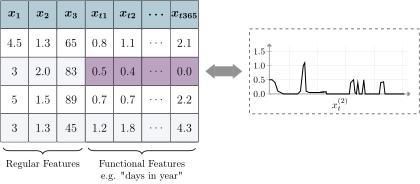

repo = "ja-thomas/extend_ames_housing/main/data/ames_dirty.csv"
ames = fread(paste0("https://raw.githubusercontent.com/", repo),
stringsAsFactors = TRUE
)9 Preprocessing
Janek Thomas
Ludwig-Maximilians-Universität München, and Munich Center for Machine Learning (MCML), and Essential Data Science Training GmbH
sec-pipelines and sec-pipelines-nonseq provided a technical introduction to mlr3pipelines, this chapter will now demonstrate how to use those pipelines to tackle common problems when preprocessing data for ML, including factor encoding, imputation of missing values, feature and target transformations, and feature extraction. Feature selection, whilst being an important preprocessing method, is covered in sec-feature-selection for a more extensive overview.
In this book, preprocessing refers to everything that happens with the data before it is used to fit the model, while postprocessingPostprocessing encompasses everything that occurs with predictions after the model is fitted. Data cleaningData Cleaning is an important part of preprocessing that involves the removal of errors, noise, and redundancy in the data; we only consider data cleaning very briefly as it is usually performed outside of mlr3 on the raw dataset.
Another aspect of preprocessing is feature engineeringFeature Engineering, which covers all other transformations of data before it is fed to the machine learning model, including the creation of features from possibly unstructured data, such as written text, sequences or images. The goal of feature engineering is to prepare the data so that a model can be trained on it, and/or to further improve predictive performance. It is important to note that feature engineering helps mostly for simpler algorithms, while highly complex models usually gain less from it and require little data preparation to be trained. Common difficulties in data that can be solved with feature engineering include features with (high) skew distributions, high cardinality categorical features, missing observations, high dimensional dimensionality and imbalanced classes in classification tasks. Deep learning has shown promising results in automating feature engineering, however its effectiveness depends on the complexity and nature of the data being processed, as well as the specific problem being addressed. Typically it is applicable to natural language processing and computer vision problems, while standard tabular data is lacking in structure for deep learning models to extract meaningful features automatically. Furthermore, different problems require different features to be extracted, and deep learning models may not always be able to identify the most relevant features for a given problem without human guidance. Hence, manual feature engineering is often required but with mlr3pipelines, we can simplify the process as much as possible.
As we work through this chapter we will use an adapted version of the Ames housing data (De Cock 2011). We changed the data slightly and introduced some additional (artificial) problems to showcase as many aspects of preprocessing as possible on a single dataset, the code to recreate this version of the data from the original raw data can be found at https://github.com/ja-thomas/extend_ames_housing. This dataset was collected as an alternative to the Boston Housing data and is commonly used to demonstrate feature engineering and ML. Raw and processed versions of the data can be directly loaded from the AmesHousing package. The dataset includes 2,930 residential properties (rows) situated in Ames, Iowa, sold between 2006 and 2010. It contains 81 features on various aspects of the house, size and shape of the lot, and information about its condition and quality. The prediction target is the sale price in USD, hence it is a regression task.
9.1 Data Cleaning
As a first step we explore the data and look for simple problems such as constant or duplicated features. This can be done quite efficiently with a package like DataExplorer or skimr which can be used to create a large number of plots.
Instead of pretending to discover issues with the data, below we will just summarize the most important findings for data cleaning:
# 1. `Misc_Feature_2` is a factor with only a single level `othr`.
summary(ames$Misc_Feature_2)Othr
2930 # 2. `Condition_2` and `Condition_3` are identical.
identical(ames$Condition_2, ames$Condition_3)[1] TRUE# 3. `Lot_Area` and `Lot_Area_m2` represent the same data but on different scales
cor(ames$Lot_Area, ames$Lot_Area_m2)[1] 1For all three problems, simply removing the problematic features (or feature in a pair) is the best course of action.
to_remove = c("Lot_Area_m2", "Condition_3", "Misc_Feature_2")Other typical problems that should be checked are:
- ID columns, i.e., columns that are unique for every observations should be removed or tagged.
NAs not correctly encoded, e.g. as"NA"or""- Semantic errors in the data, e.g., negative
Lot_Area - Numeric features encoded as categorical for learners that can not handle such features.
Before we continue with feature engineering we will create a task, measure, and resampling strategy to use throughout the chapter.
library(mlr3verse)
tsk_ames = as_task_regr(ames, target = "Sale_Price", id = "ames")
# remove problematic features
tsk_ames$select(setdiff(tsk_ames$feature_names, to_remove))
measure = msr("regr.mae")
rsmp_cv3 = rsmp("cv", folds = 3)
rsmp_cv3$instantiate(tsk_ames)Lastly we run a very simple experiment to verify our setup works as expected with a simple featureless baseline, note below we set robust = TRUE to always predict the median sale price as opposed to the mean.
lrn_baseline = lrn("regr.featureless", robust = TRUE)
lrn_baseline$id = "Baseline"
rr_baseline = resample(tsk_ames, lrn_baseline, rsmp_cv3)
rr_baseline$aggregate(measure)regr.mae
56056 9.2 Factor Encoding
We refer to variables as categorical features if they can only take a limited set of values, for example the Paved_Drive feature can only take values Dirt_Gravel, Partial_Pavement, and Paved.
Many machine learning algorithms implementations, such as XGBoost (Chen and Guestrin 2016), cannot handle categorical data and so categorical features must be encoded into numerical variables.
lrn_xgb = lrn("regr.xgboost", nrounds = 100)
lrn_xgb$train(tsk_ames)Error: <TaskRegr:ames> has the following unsupported feature types: factorCategorical features can be distinguished from one another by their cardinality, which refers to the number of levels they contain. There are three types of categorical features: binary (two levels), low-cardinality, and high-cardinality; there is no universal threshold for when a feature should be considered high-cardinality however one can consider this threshold to be a tunable hyperparameter that can be tuned. For now we will consider high-cardinality to be features with more than 10 levels:
names(which(lengths(tsk_ames$levels()) > 10))[1] "Exterior_1st" "Exterior_2nd" "MS_SubClass" "Neighborhood"Binary features can be trivially encoded by setting one of the feature levels to 1 and the other to 0.
names(which(lengths(tsk_ames$levels()) == 2))[1] "Alley" "Central_Air" "Street" Low-cardinality features can be handled by one-hot encodingOne-hot Encoding. One-hot encoding is a process of converting categorical features into a binary representation, where each possible category is represented as a separate binary feature. Theoretically it is sufficient to create one less binary feature than levels, as setting all binary features to zero is also a valid representation. This is typically called dummy or treatment encoding and is required if the learner is a generalized linear (GLM) or additive model (GAM) model.
Some learners support handling categorical features but may still crash for high-cardinality features if they internally apply encodings that are only suitable for low-cardinality features, such as one-hot encoding. Impact encoding is a good approach to handle high-cardinality features. Impact encodingImpact Encoding converts categorical features into numeric values based on the impact of the feature on the target. The idea behind impact encoding is to use the target feature to create a mapping between the categorical feature and a numerical value that reflects its importance in predicting the target feature. Impact encoding involves the following steps:
- Group the target variable by the categorical feature.
- Compute the mean of the target variable for each group.
- Compute the global mean of the target variable.
- Compute the impact score for each group as the difference between the mean of the target variable for the group and the global mean of the target variable.
- Replace the categorical feature with the impact scores.
Impact encoding preserves the information of the categorical feature while also creating a numerical representation that reflects its importance in predicting the target. The main advantage, compared to one-hot encoding is that only a single numeric feature is created regardless of the number of levels of the categorical features, hence it is especially useful for high-cardinality features. As information from the target is used to compute the impact scores, it is crucial that the encoding process is embedded in the cross-validation process to avoid leakage between training and testing data (sec-performance).
As well as encoding features, another basic preprocessing step is to remove any features that are constant (only have one level and should have been removed as part of EDA). In addition, it may be essential to collapse levels that occur very rarely as these may be missed during resampling, though stratification can be used to mitigate this (sec-strat-group).
In the code below we use po("removeconstants") to remove features with only one level, po("collapsefactors") to collapse levels that occur less than 1% of the time in the data, po("encodeimpact") to impact encode high-cardinality features, po("encode", method = "one-hot") to one-hot encode low-cardinality features, and finally po("encode", method = "treatment") to treatment encode binary features.
factor_pipeline =
po("removeconstants") %>>%
po("collapsefactors", no_collapse_above_prevalence = 0.01) %>>%
po("encodeimpact", affect_columns = selector_cardinality_greater_than(10),
id = "high_card_enc") %>>%
po("encode", method = "one-hot", affect_columns = selector_cardinality_greater_than(2),
id = "low_card_enc") %>>%
po("encode", method = "treatment", affect_columns = selector_type("factor"),
id = "binary_enc")Now we can apply this pipeline to our xgboost model to use it in a benchmark experiment; we also compare a simpler pipeline that only uses one-hot encoding to demonstrate performance difference resulting from different strategies.
glrn_xgb_impact = as_learner(factor_pipeline %>>% lrn_xgb)
glrn_xgb_impact$id = "XGB_enc_impact"
glrn_xgb_one_hot = as_learner(po("encode") %>>% lrn_xgb)
glrn_xgb_one_hot$id = "XGB_enc_onehot"
learners = list(
baseline = lrn_baseline,
xgb_impact = glrn_xgb_impact,
xgb_one_hot = glrn_xgb_one_hot
)
bmr = benchmark(benchmark_grid(tsk_ames, learners, rsmp_cv3))
bmr$aggregate(measure = measure)[, .(learner_id, regr.mae)] learner_id regr.mae
1: Baseline 56056
2: XGB_enc_impact 16068
3: XGB_enc_onehot 16098In this small experiment we see that the difference between the extended factor encoding pipeline and the simpler one-hot encoding strategy pipeline is only moderate. If you are interested in learning more about different encoding strategies, including a benchmark study comparing them, we recommend Pargent et al. (2022).
9.3 Missing Values
A common problem in real-world data is missing data. In the Ames dataset, several variables have at least one missing data point:
names(which(tsk_ames$missings() > 0) ) [1] "Alley" "BsmtFin_SF_1" "BsmtFin_SF_2" "BsmtFin_Type_1"
[5] "BsmtFin_Type_2" "Bsmt_Cond" "Bsmt_Exposure" "Bsmt_Full_Bath"
[9] "Bsmt_Half_Bath" "Bsmt_Qual" "Bsmt_Unf_SF" "Electrical"
[13] "Fence" "Fireplace_Qu" "Garage_Area" "Garage_Cars"
[17] "Garage_Cond" "Garage_Finish" "Garage_Qual" "Garage_Type"
[21] "Garage_Yr_Blt" "Lot_Frontage" "Mas_Vnr_Area" "Mas_Vnr_Type"
[25] "Misc_Feature" "Pool_QC" "Total_Bsmt_SF" Many learners cannot handle missing values automatically (e.g., lrn("regr.ranger") and lrn("regr.lm")), other learners can handle missing values but may use simple methods that may not be ideal (e.g., just omitting rows with missing data).
The simplest data imputationData Imputation method is to replace missing values by the feature’s mean (po("imputemean")) (Figure fig-imputation), median (po("imputemedian")), or mode (po("imputemode")). Alternatively, one can impute by sampling from the empirical distribution of the feature, for example a histogram (po("imputehist")). Instead of guessing at what a missing feature might be, missing values could instead be replaced by a new level, for example called .MISSING (po("imputeoor")). For numeric features, Ding and Simonoff (2010) show that for binary classification and tree-based models, encoding missing values out-of-range (OOR), e.g. as two times the largest observed value, is a reasonable approach.
It is very important for predictive tasks that you keep track of missing data as it is common for missing data to be informative in itself. As a real-world example, medical data is usually better collected for White communities than racially minoritized ones. Imputing data from minoritized communities would at best mask this data bias, and at worst would make the data bias even worse by making vastly inaccurate assumptions (see sec-fairness for data bias and algorithmic fairness). Hence, imputation should be tracked by adding binary indicator features (one for each imputed feature) that are 1 if the feature was missing for an observation and 0 if it was present (po("missind")).
In the code below we create a pipeline form the PipeOps listed above as well as making use of po("featureunion") to combine multiple PipeOps acting on the "integer" columns.
impute_hist = list(
po("missind",
type = "integer",
affect_columns = selector_type("integer")
),
po("imputehist",
affect_columns = selector_type("integer")
)) %>>%
po("featureunion") %>>%
po("imputeoor",
affect_columns = selector_type("factor")
)
impute_hist$plot(horizontal = TRUE)
Using this pipeline we can now run experiments with lrn("regr.ranger"), which cannot handle missing data; we also compare a simpler pipeline that only uses OOR imputation to demonstrate performance difference resulting from different strategies.
glrn_rf_impute_hist = as_learner(impute_hist %>>% lrn("regr.ranger"))
glrn_rf_impute_hist$id = "RF_imp_Hist"
glrn_rf_impute_oor = as_learner(po("imputeoor") %>>% lrn("regr.ranger"))
glrn_rf_impute_oor$id = "RF_imp_OOR"
design = benchmark_grid(tsk_ames, c(glrn_rf_impute_hist, glrn_rf_impute_oor), rsmp_cv3)
bmr_new = benchmark(design)
bmr$combine(bmr_new)
bmr$aggregate(measure = measure)[, .(learner_id, regr.mae)] learner_id regr.mae
1: Baseline 56056
2: XGB_enc_impact 16068
3: XGB_enc_onehot 16098
4: RF_imp_Hist 16400
5: RF_imp_OOR 16395Similarly to encoding, we see limited difference in performance between the different imputation strategies.
Many more advanced imputation strategies exist, including model based imputation where machine learning models are used to predict missing values before passing, and multiple imputation where data is repeatedly resampling and imputed in each sample (e.g., by mean imputation) to attain more robust estimates. However, these more advanced techniques rarely improve the model substantially and the simple imputation techniques introduced above are usually sufficient (Poulos and Valle 2018).
9.4 Pipeline Robustify
mlr3pipelines offers a simple and reusable pipeline for (among other things) imputation and factor encoding called ppl("robustify"), which includes sensible defaults that can be used most of the time when encoding or imputing data. The pipeline includes the following PipeOps:
po("removeconstants")– Constant features are removed.po("colapply")– Character and ordinal features are encoded as categorical, and date/time features are encoded as numeric.po("imputehist")– Numeric features are imputed by histogram.po("imputesample")– Logical features are imputed by sampling from the empirical distribution.po("missind")– Missing data indicators are added for imputed numeric and logical variablespo("imputeoor")– Missing values of categorical features are encoded with a new levelpo("fixfactors")– Fixes levels of categorical features such that the same levels are present during prediction and training (which may involve dropping empty factor levels)po("imputesample")– Missing values in categorical features introduced from dropping levels in the previous step are imputed by sampling from the empirical distributions.po("collapsefactors")– Categorical features levels are collapsed (starting from the rarest factors in the training data) until there are less than 1000 levelspo("encode")– Categorical features are one-hot encodedpo("removeconstants")– Constant features that might have been created in the previous steps are removed
Linear regression is a simple model that cannot handle most problems that we may face when processing data, but with the ppl("robustify") pipeline we can now include it in our experiment:
glrn_lm_robust = as_learner(ppl("robustify") %>>% lrn("regr.lm"))
glrn_lm_robust$id = "lm_robust"
bmr_new = benchmark(benchmark_grid(tsk_ames, glrn_lm_robust, rsmp_cv3))
bmr$combine(bmr_new)
bmr$aggregate(measure = measure)[, .(learner_id, regr.mae)] learner_id regr.mae
1: Baseline 56056
2: XGB_enc_impact 16068
3: XGB_enc_onehot 16098
4: RF_imp_Hist 16400
5: RF_imp_OOR 16395
6: lm_robust 16298Robustifying the linear regression results in a model that vastly outperforms the featureless baseline and is competitive when compared to more complex machine learning models.
9.5 Scaling Features and Targets
Simple transformations of features and the target can be beneficial (and sometimes essential) for certain learners. In particular, log transformation of the target can help in making the distribution more symmetrical and can help reduce the impact of outliers; this is particularly important for algorithms that assume the target is normally distributed. Similarly, log transformation of skewed features can help to reduce the influence of outliers. In Figure fig-sale we plot the distribution of the target in the ames dataset and then the log-transformed target, we can see how simply taking the log of the variable results in a distribution that is much more symmetrical and with fewer outliers.
library(patchwork)
# copy ames data
log_ames = copy(ames)
# log transform target
log_ames[, logSalePrice := log(Sale_Price)]
# plot
autoplot(as_task_regr(log_ames, target = "Sale_Price")) +
autoplot(as_task_regr(log_ames, target = "logSalePrice"))
Normalization of features may also be necessary to ensure features with a larger scale do not have a higher impact, which is especially important for distance based methods such as K-nearest neighbor models or regularized parametric models such as Lasso or Elastic net. Many models internally scale the data if required by the algorithm so most of the time we do not need to manually do this in preprocessing, though if this is required then po("scale") can be used to center and scale numeric features.
Any transformations applied to the target during training must be inverted during model prediction to ensure predictions are made on the correct scale. By example, say we are interested in log transforming the target, then we would take the following steps:
df = data.table(x = runif(5), y = runif(5, 10, 20))
df x y
1: 0.48004 10.25
2: 0.14466 10.75
3: 0.05795 18.30
4: 0.65004 17.34
5: 0.37355 10.48# 1. log transform the target
df[, y := log(y)]
df$y[1] 2.327 2.375 2.907 2.853 2.350# 2. make linear regression predictions
# predictions on the log-transformed scale
yhat = predict(lm(y ~ x, df), df)
yhat 1 2 3 4 5
2.556 2.571 2.575 2.548 2.561 # 3. transform to correct scale with inverse of log function
# predictions on the original scale
exp(yhat) 1 2 3 4 5
12.88 13.08 13.13 12.79 12.95 In this simple experiment we could manually transform and invert the target, however this is much more complex when dealing with resampling and benchmarking experiments and so the pipeline ppl("targettrafo") will do this heavy lifting for you. The pipeline includes a parameter targetmutate.trafo for the transformation to be applied during training to the target, as well as targetmutate.inverter for the transformation to be applied to invert the original transformation during prediction. So now let us consider the log transformation by adding this pipeline to our robust linear regression model:
glrn_log_lm_robust = as_learner(ppl("targettrafo", graph = glrn_lm_robust,
targetmutate.trafo = function(x)log(x),
targetmutate.inverter = function(x) list(response = exp(x$response))))
glrn_log_lm_robust$id = "lm_robust_logtrafo"
bmr_new = benchmark(benchmark_grid(tsk_ames, glrn_log_lm_robust, rsmp_cv3))
bmr$combine(bmr_new)
bmr$aggregate(measure = measure)[, .(learner_id, regr.mae)] learner_id regr.mae
1: Baseline 56056
2: XGB_enc_impact 16068
3: XGB_enc_onehot 16098
4: RF_imp_Hist 16400
5: RF_imp_OOR 16395
6: lm_robust 16298
7: lm_robust_logtrafo 15557With the target transformation and the ppl("robustify") pipeline, the simple linear regression now appears to be the best performing model.
9.6 Feature Extraction
As a final step of data preprocessing we will look at feature extraction. In sec-feature-selection we look at automated feature selection and how automated approaches with filters and wrappers can be used to reduce a dataset to the optimal set of features. Feature extraction differs from this process as we are now interested in features that are highlight dependent on one another and all together may provide useful information but not individually. As a concrete example, consider the power consumption of kitchen appliances in houses in the Ames dataset.
repo = "ja-thomas/extend_ames_housing/main/data/energy_usage.csv"
energy_data = fread(paste0("https://raw.githubusercontent.com/", repo),
stringsAsFactors = TRUE
)In this dataset, each row of represents one house and each feature is the total power consumption from kitchen appliances at a given time (Bagnall et al. 2017). The consumption is measured in 2-minute intervals, resulting in 720 features.
library(ggplot2)
ggplot(data.frame(y = as.numeric(energy_data[1, ])), aes(y = y, x = 1:720)) +
geom_line() + theme_minimal() +
labs(x = "2-Minute Interval", y = "Power Consumption")
Adding these 720 features to our full dataset is a bad idea as each individual feature does not provide meaningful information, similarly we cannot automate selection of the best feature subset for the same reason. Instead we can extract information about the curves to gain insights into the kitchen’s overall energy usage. For example, we could extract the maximum used wattage, overall used wattage, number of peaks, and other similar features.
To extract features we will write our own PipeOp that inherits from [PipeOpTaskPreprocSimple](https://mlr3pipelines.mlr-org.com/reference/PipeOpTaskPreprocSimple.html){.refcode}. To do this we simply add a private method called.transform_dt` that hardcodes the operations on our task. In this example we select the functional features (which all start with “att”), extract the mean, minimum, maximum, and variance of the power consumption, and then remove the functional features.
PipeOpFuncExtract = R6::R6Class("PipeOpFuncExtract",
inherit = mlr3pipelines::PipeOpTaskPreprocSimple,
private = list(
.transform_dt = function(dt, levels) {
ffeat_names = paste0("att", 1:720)
ffeats = dt[, ..ffeat_names]
dt[, energy_means := apply(ffeats, 1, mean)]
dt[, energy_mins := apply(ffeats, 1, min)]
dt[, energy_maxs := apply(ffeats, 1, max)]
dt[, energy_vars := apply(ffeats, 1, var)]
dt[, (ffeat_names) := NULL]
dt
}
)
)
Before using this in an experiment we first test that the PipeOp works as expected.
tsk_ames_ext = cbind(ames, energy_data)
tsk_ames_ext = as_task_regr(tsk_ames_ext, "Sale_Price", "ames_ext")
# remove the redundant variables identified at the start of this chapter
tsk_ames_ext$select(setdiff(tsk_ames_ext$feature_names, to_remove))
func_extractor = PipeOpFuncExtract$new("energy_extract")
tsk_ames_ext = func_extractor$train(list(tsk_ames_ext))[[1]]
tsk_ames_ext$data(1, c("energy_means", "energy_mins", "energy_maxs", "energy_vars")) energy_means energy_mins energy_maxs energy_vars
1: 1.062 0.01427 21.98 3.708These outputs look sensible compared to Figure fig-energy so we can now run our final benchmark experiment using feature extraction. We do not need to add the PipeOp to each learner as we can apply it once (as above) before any model training by applying it to all available data.
learners = list(
baseline = lrn_baseline,
tree = lrn("regr.rpart"),
xgb_impact = glrn_xgb_impact,
rf_impute_oor = glrn_rf_impute_oor,
lm_robust = glrn_lm_robust,
log_lm_robust = glrn_log_lm_robust
)
bmr_final = benchmark(benchmark_grid(c(tsk_ames_ext, tsk_ames), learners, rsmp_cv3))
bmr_final$aggregate(measure = measure) nr task_id learner_id resampling_id iters regr.mae
1: 1 ames_ext Baseline cv 3 56056
2: 2 ames_ext regr.rpart cv 3 27111
3: 3 ames_ext XGB_enc_impact cv 3 14400
4: 4 ames_ext RF_imp_OOR cv 3 14320
5: 5 ames_ext lm_robust cv 3 15093
---
8: 8 ames regr.rpart cv 3 27371
9: 9 ames XGB_enc_impact cv 3 16068
10: 10 ames RF_imp_OOR cv 3 16354
11: 11 ames lm_robust cv 3 16291
12: 12 ames lm_robust_logtrafo cv 3 15555
Hidden columns: resample_resultThe final results indicate that adding these extracted features improved the performance of all models (except the featureless baseline).
In this example, we could have just applied the transformations to the dataset directly. The advantage of using the PipeOp is that we could have chained it to a subset of learners to prevent a blow-up of experiments in the benchmark experiment.
9.7 Conclusion
In this chapter we built on everything learnt in sec-pipelines and sec-pipelines-nonseq to look at concrete usage of pipelines for data preprocessing. We focused primarily on feature engineering, which can make use of mlr3pipelines to automate preprocessing as much as possible whilst still ensuring user control. We looked at factor encoding for categorical variables, imputing missing data, scaling variables, and feature extraction. Preprocessing is almost always required in machine learning experiments, and applying the ppl("robustify") pipeline will help in many cases to simplify this process by applying the most common preprocessing steps, we will see this in use in sec-large-benchmarking.
We have not introduced any new classes here so in Table tbl-prepro-api we list the PipeOps and Graphs discussed in this chapter.
| PipeOp/Graph | Description |
|---|---|
PipeOpRemoveConstants |
Remove variables consisting of one value |
PipeOpCollapseFactors |
Combine rare factor levels |
PipeOpEncodeImpact |
Impact encoding |
PipeOpEncode |
Other factor encoding methods |
PipeOpMissInd |
Add an indicator column to track missing data |
PipeOpImputeHist |
Impute missing data by sampling from a histogram |
PipeOpImputeOOR |
Impute missing data with out-of-range values |
pipeline_robustify |
Graph with common imputation and encoding methods |
pipeline_targettrafo |
Graph to transform target during training and invert transformation during prediction |
9.8 Exercises
9.9 Citation
Please cite this chapter as:
Thomas J. (2024). Preprocessing. In Bischl B, Sonabend R, Kotthoff L, Lang M, (Eds.), Applied Machine Learning Using mlr3 in R. CRC Press. https://mlr3book.mlr-org.com/preprocessing.html.
Applied Machine Learning Using mlr3 in R - 9 Preprocessing Applied Machine Learning Using mlr3 in R - 9 Preprocessing Applied Machine Learning Using mlr3 in R - 9 Preprocessing Applied Machine Learning Using mlr3 in R
Bagnall, Anthony, Jason Lines, Aaron Bostrom, James Large, and Eamonn Keogh. 2017. “The Great Time Series Classification Bake Off: A Review and Experimental Evaluation of Recent Algorithmic Advances.” Data Mining and Knowledge Discovery 31: 606–60.
Chen, Tianqi, and Carlos Guestrin. 2016. “Xgboost: A Scalable Tree Boosting System.” In Proceedings of the 22nd Acm Sigkdd International Conference on Knowledge Discovery and Data Mining, 785–94.
De Cock, Dean. 2011. “Ames, Iowa: Alternative to the Boston Housing Data as an End of Semester Regression Project.” Journal of Statistics Education 19 (3).
Ding, Yufeng, and Jeffrey S Simonoff. 2010. “An Investigation of Missing Data Methods for Classification Trees Applied to Binary Response Data.” Journal of Machine Learning Research 11 (1).
Pargent, Florian, Florian Pfisterer, Janek Thomas, and Bernd Bischl. 2022. “Regularized Target Encoding Outperforms Traditional Methods in Supervised Machine Learning with High Cardinality Features.” Computational Statistics 37 (5): 2671–92.
Poulos, Jason, and Rafael Valle. 2018. “Missing Data Imputation for Supervised Learning.” Applied Artificial Intelligence 32 (2): 186–96. https://doi.org/10.1080/08839514.2018.1448143.